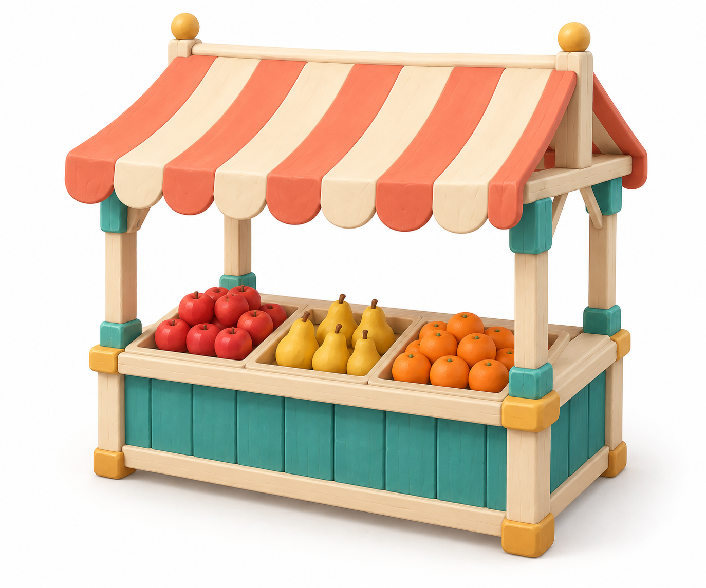
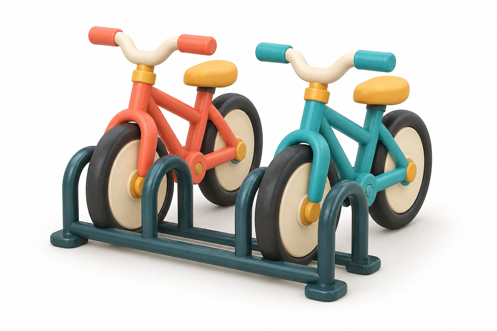
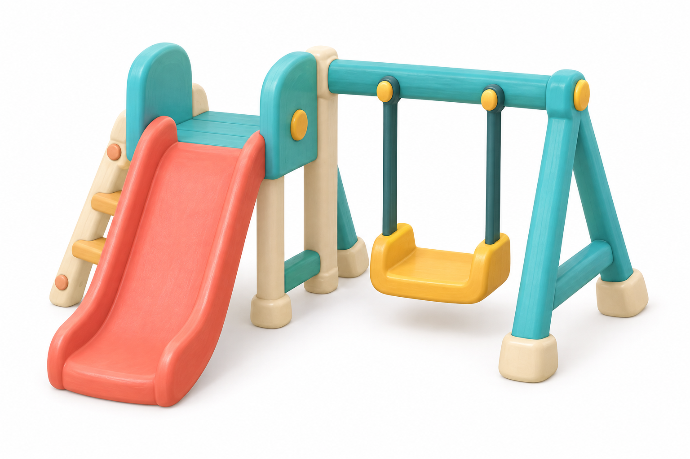
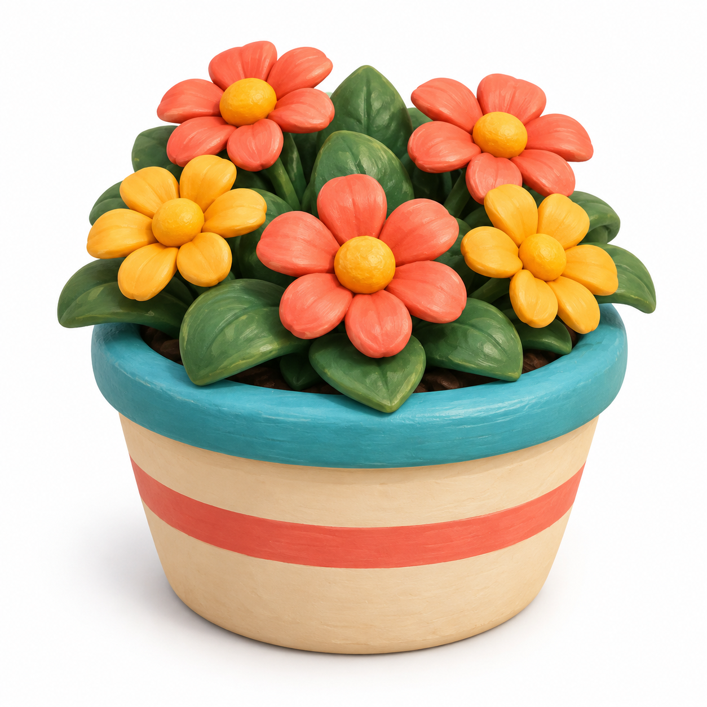
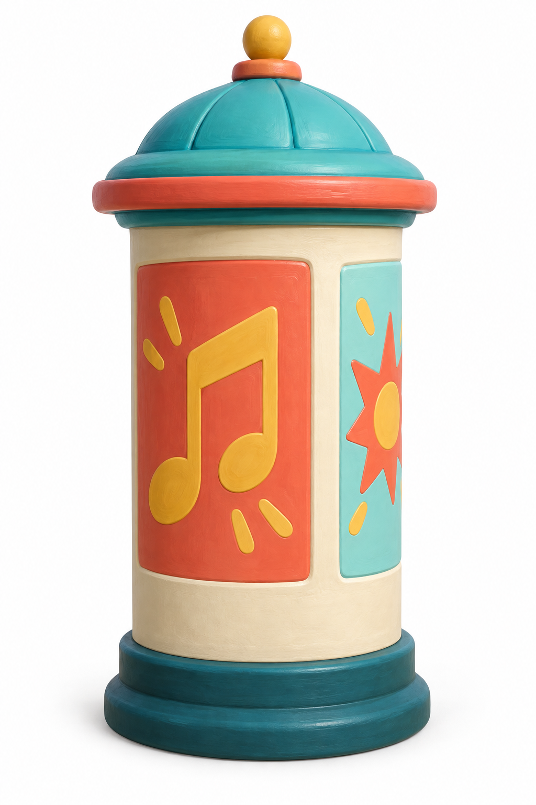
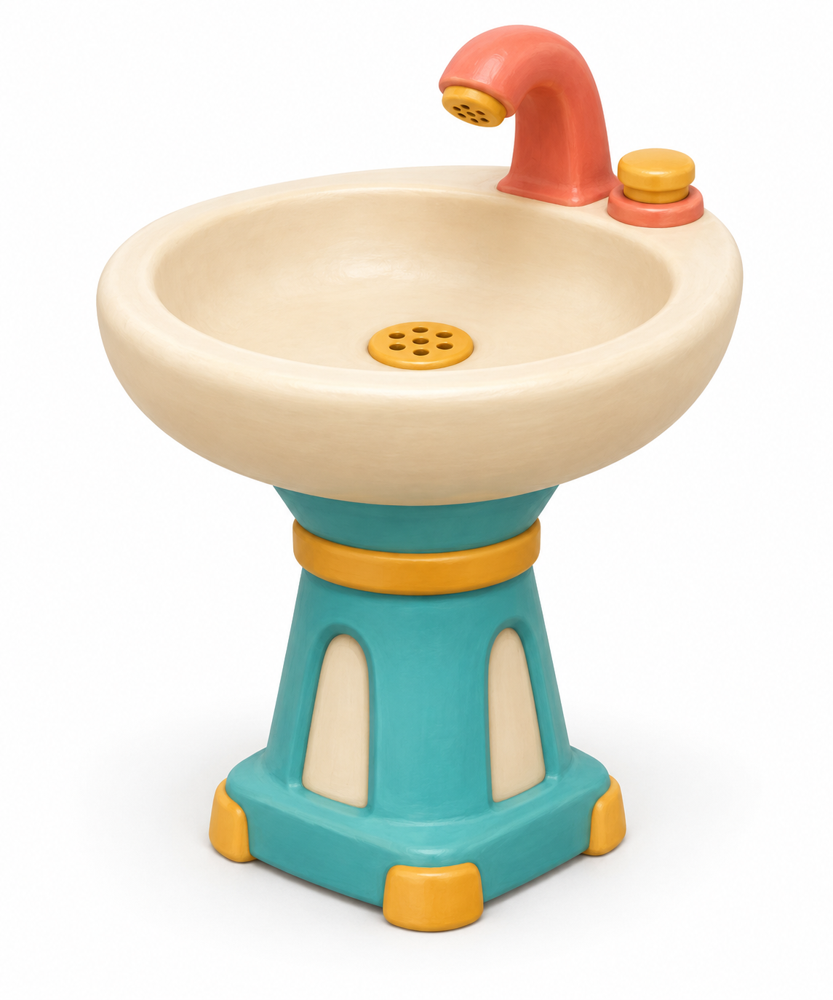
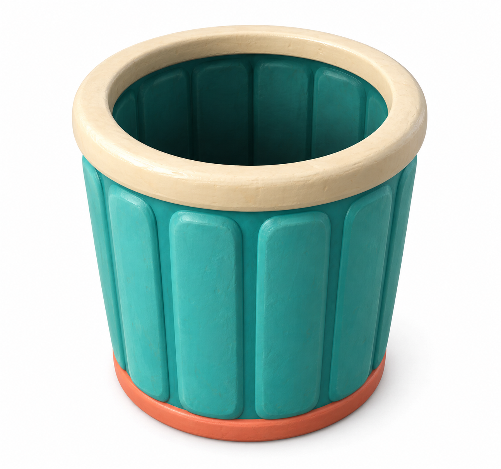
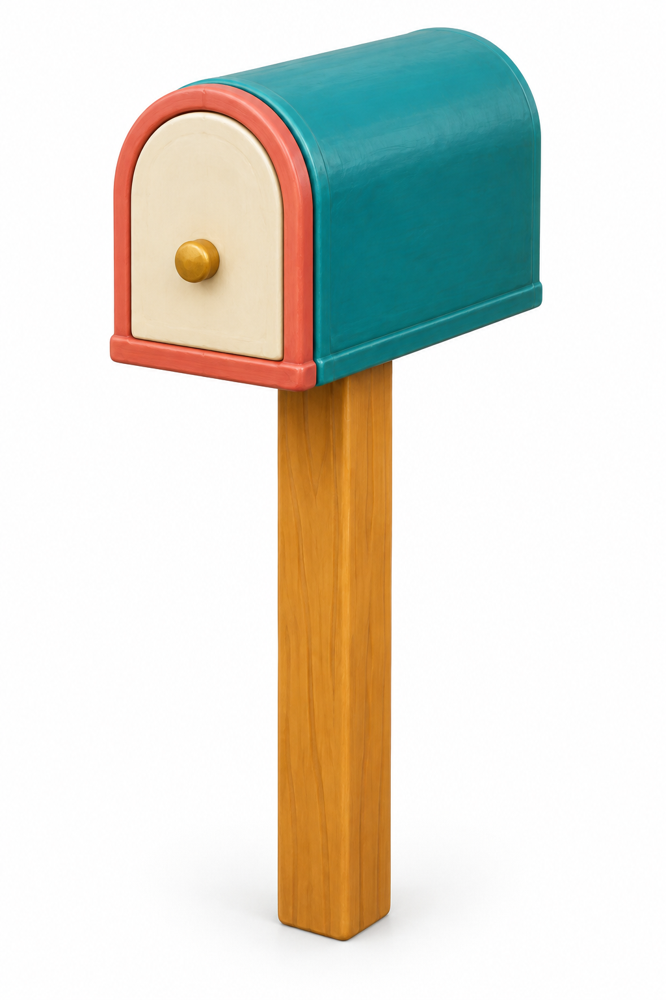

Фрукты рядом с цветочным киоскомТри вида фруктов, открытый навес и цельный прилавок.city-fruit-stallЦель XYZ: 2.4 × 2.4 × 1.6
Велосипеды у школьного кварталаДва статичных игрушечных велосипеда; все четыре колеса должны стоять на земле.city-bike-rackЦель XYZ: 2.5 × 1.3 × 1.6
Небольшая площадка в паркеГорка и одна неподвижная качель. Без персонажей и общей платформы.city-playgroundЦель XYZ: 3.8 × 2.5 × 2.8
Вазон у северного края паркаПять крупных цветков и цельная крона листьев.city-flower-planterЦель XYZ: 0.9 × 0.85 × 0.9
Афиша между клубом и магазиномКартинки вместо надписей. Габарит включает крышку и основание.city-poster-columnЦель XYZ: 0.9 × 2.2 × 0.9
Питьевой фонтанчик у площадкиПустая чаша, цельный кран и кнопка. Декоративный предмет.city-drinking-fountainЦель XYZ: 0.7 × 1 × 0.7
Урна у магазина — замена корпусаТолько открытый корпус. Крышка и кот остаются в игровой анимации.city-street-binЦель XYZ: 0.76 × 0.9 × 0.76
Почтовый ящик у бабушки — замена корпусаТолько корпус со стойкой. Флажок и письмо остаются в игровой анимации.city-postboxЦель XYZ: 0.44 × 1.22 × 0.6